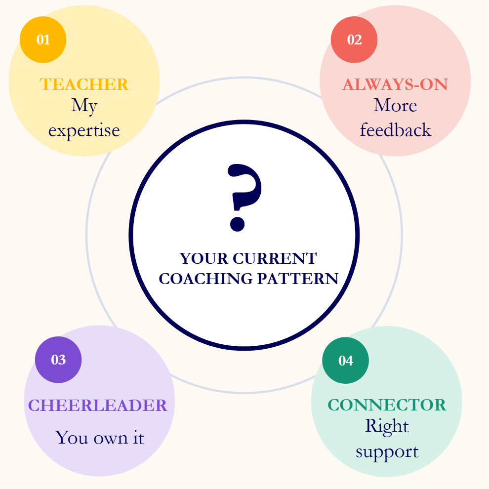
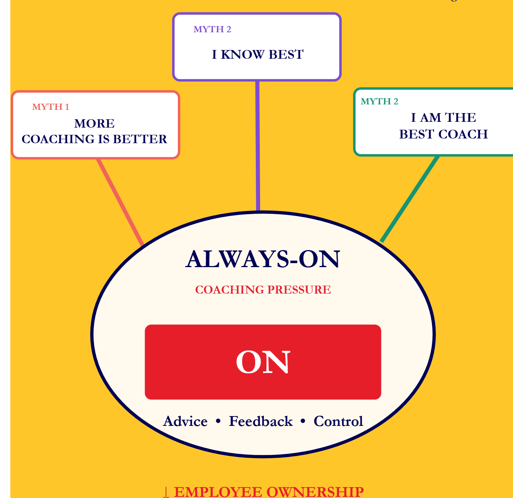
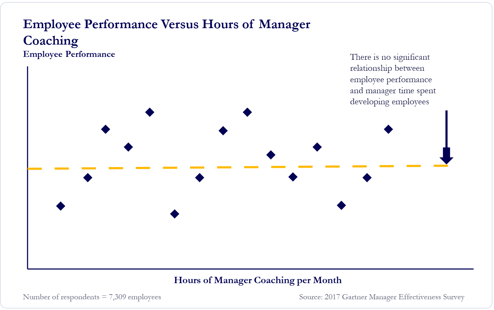
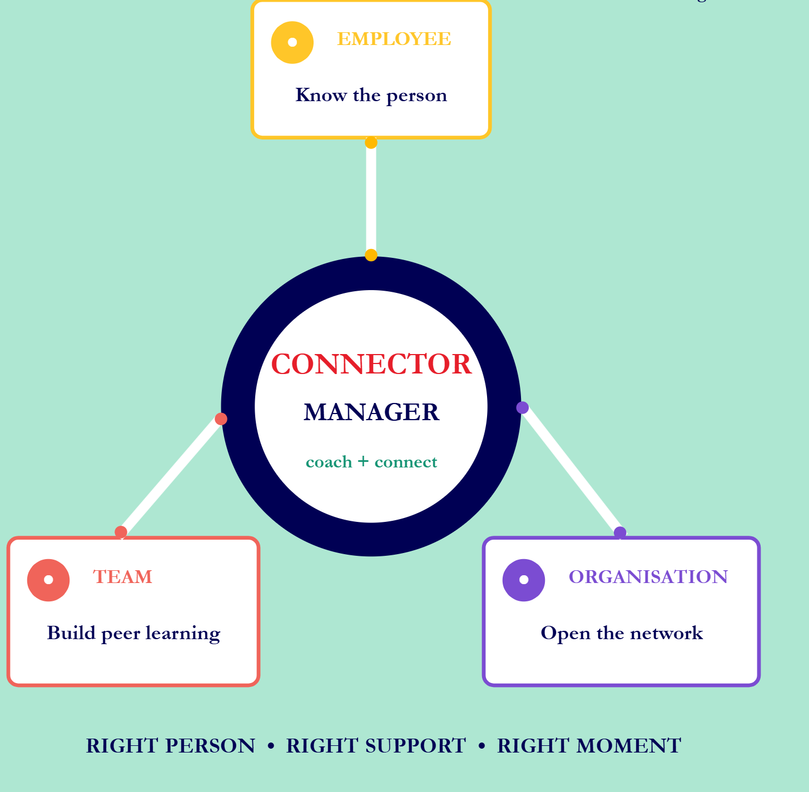
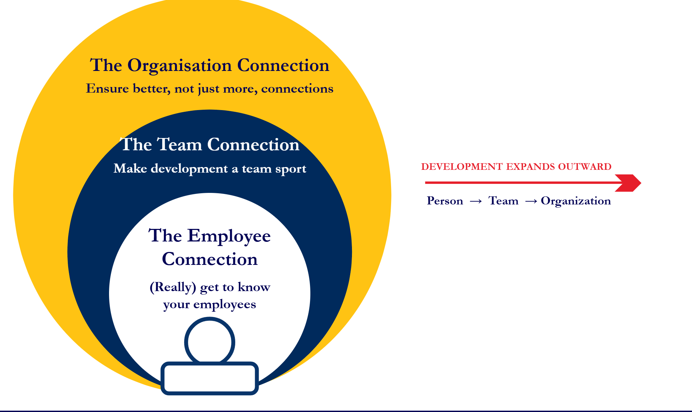
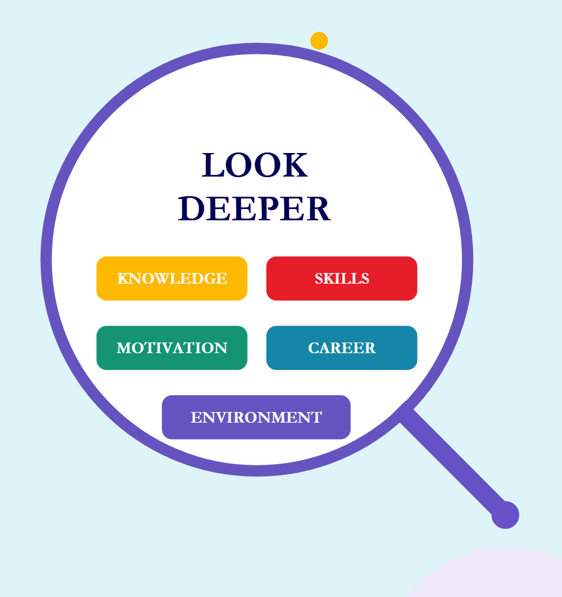
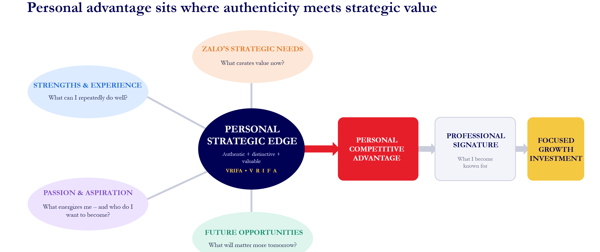
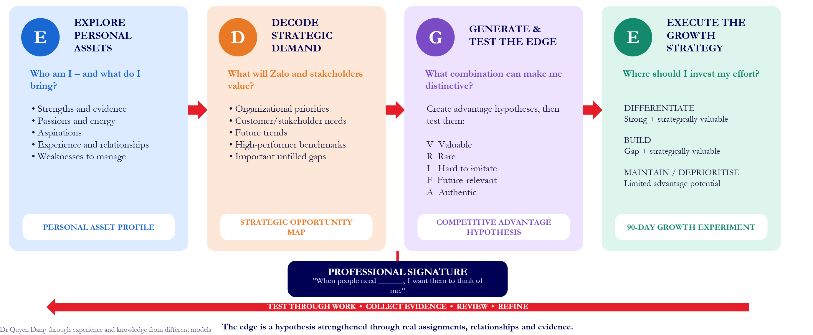
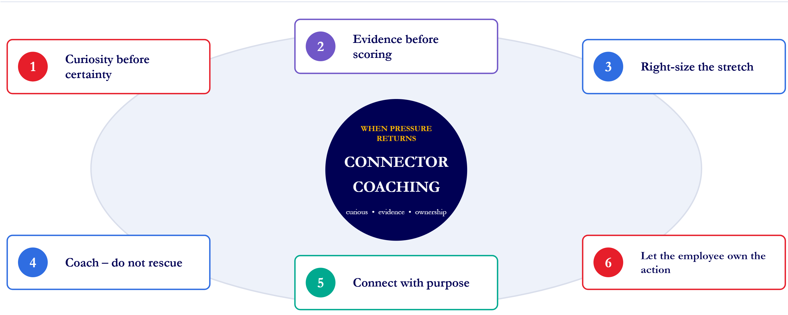

Chủ đề 9: Coaching để đạt hiệu suất cao
Topic 9: Coaching for High Performance — bản đối chiếu Anh – Việt
TS. Quyen Dang · 54 slide
Quy ước của bản dịch. Mỗi slide là một khối: cột bên trái là nguyên văn tiếng Anh (màu xám), cột bên phải là bản tiếng Việt (màu đen). Nội dung được dịch sát theo từng slide, không lược bỏ. Chữ nằm trong hình đồ hoạ của slide cũng được dịch. Dòng “RMIT | Zalo me.grow” và chân trang “Coaching for High Performance • số trang” xuất hiện ở hầu hết các slide nên không nhắc lại. Số slide theo thứ tự trang của file PDF; số in ở chân trang một số slide gốc không khớp thứ tự này.
Phần mô tả hình ảnh và các ghi chú về slide gốc được ghi bằng chữ nghiêng màu xám. Đó là ghi chú của bản dịch, không phải nội dung gốc trên slide.
Tên riêng, tên tổ chức và trích dẫn nguồn giữ nguyên. Coaching được giữ nguyên. Bốn kiểu quản lý được dịch là: Teacher – “Người thầy”, Always-On – “Luôn bật”, Cheerleader – “Cổ vũ”, Connector – “Kết nối”. Root cause là “nguyên nhân gốc”, readiness là “mức độ sẵn sàng”, stretch là “thử thách vươn tầm”, ownership là “tinh thần làm chủ”, judicious generosity là “hào phóng có cân nhắc”. Triad là “nhóm ba người”; Observer / Coaching Detective là “Người quan sát” / “Thám tử coaching”. Tên mô hình EDGE, bộ tiêu chí VRIFA, lộ trình D–R–C và các chữ viết tắt M/E/O giữ nguyên.
Topic 9: Coaching for High Performance
Chủ đề 9: Coaching để đạt hiệu suất cao
Dr Quyen Dang
Head of Management Department
The Business School
TS. Quyen Dang
Trưởng Bộ môn Quản lý
Khoa Kinh doanh (The Business School)
SESSION FLOW — Here’s How We’ll Spend the Day
TIẾN TRÌNH BUỔI HỌC — Chúng ta sẽ dành cả ngày như thế này
| Time · LO Thời gian · MT | English | Tiếng Việt |
| 09:00–09:15 | Opening: Coaching Pain Points Kick-off | Khai mạc: Khởi động với những “điểm đau” khi coaching |
| 09:15–10:15 LO1 | What Type of Manager Are You? | Bạn là kiểu quản lý nào? |
| 10:15–10:45 LO1 | Always-On Managers and the Myths | Nhà quản lý Luôn bật và những ngộ nhận |
| 10:45–11:00 Break | Morning break | Giải lao buổi sáng |
| 11:00–12:00 LO2 | Understand and Become a Connector | Hiểu và trở thành nhà quản lý Kết nối |
| 12:00–13:30 Lunch | Lunch | Ăn trưa |
| 13:30–14:30 LO3 | High Performers and Personal Growth | Người hiệu suất cao và phát triển cá nhân |
| 14:30–14:45 Break | Afternoon break | Giải lao buổi chiều |
| 14:45–16:00 LO1–LO3 | Coaching Detective Role Play | Nhập vai Thám tử coaching |
| 16:00–16:30 LO4 | Detailed Action Plan and Close | Kế hoạch hành động chi tiết và bế mạc |
LO (Learning Outcome) – mục tiêu học tập, xem slide 05.
Dr Quyen Dang
TS. Quyen Dang
Consultant, Human Resource Management and International Business
Email: quyen.dangthao@rmit.edu.vn
Address: Level 9, RMIT Vietnam, Hanoi Campus
Education:
- Doctor of Philosophy in International Human Resource Management, University of Technology Sydney, Australia (2019)
- Master of Commerce in Human Resource Management, Macquarie University, Australia (2016)
- Bachelor of International Business and Economics, Foreign Trade University, Vietnam (2011)
Awards:
- Best Phenomenon-based Paper Award, 2025, Journal World of Business (A*)
- Women In Academy of International Business Awards for Women Scholars (2019, Denmark)
- University of Technology Sydney PhD Scholarship, 2016 – 2019
Research interests:
- International Business
- Human Resource Management
- University-Industry Knowledge Collaboration
Chuyên gia tư vấn, Quản trị Nguồn nhân lực và Kinh doanh Quốc tế
Email: quyen.dangthao@rmit.edu.vn
Địa chỉ: Tầng 9, RMIT Việt Nam, Cơ sở Hà Nội
Học vấn:
- Tiến sĩ Quản trị Nguồn nhân lực Quốc tế, Đại học Công nghệ Sydney (University of Technology Sydney), Úc (2019)
- Thạc sĩ Thương mại chuyên ngành Quản trị Nguồn nhân lực, Đại học Macquarie, Úc (2016)
- Cử nhân Kinh doanh và Kinh tế Quốc tế, Đại học Ngoại thương, Việt Nam (2011)
Giải thưởng:
- Giải Bài báo dựa trên hiện tượng xuất sắc nhất (Best Phenomenon-based Paper Award), 2025, tạp chí Journal World of Business (A*)
- Giải thưởng dành cho Nữ học giả của Women In Academy of International Business (2019, Đan Mạch)
- Học bổng Tiến sĩ của Đại học Công nghệ Sydney, 2016 – 2019
Lĩnh vực nghiên cứu:
- Kinh doanh quốc tế
- Quản trị nguồn nhân lực
- Hợp tác tri thức giữa đại học và doanh nghiệp
ACTIVITY — What challenges do you face?
HOẠT ĐỘNG — Bạn đang gặp những thách thức nào?
- Open Mentimeter using the link or code shared
- Select every challenge that feels familiar
- Notice the class pattern on screen
- Choose one real challenge to carry through today
REFLECT: Which challenge would make the biggest difference if you handled it better?
- Mở Mentimeter bằng đường link hoặc mã được chia sẻ
- Chọn mọi thách thức mà bạn thấy quen thuộc
- Quan sát xu hướng chung của cả lớp trên màn hình
- Chọn một thách thức có thật để theo xuyên suốt hôm nay
SUY NGẪM: Thách thức nào sẽ tạo ra khác biệt lớn nhất nếu bạn xử lý nó tốt hơn?
LEARNING OUTCOMES — Four outcomes to take from today
MỤC TIÊU HỌC TẬP — Bốn điều bạn mang về từ hôm nay
- Learning Outcome 1: Recognise your coaching style, strengths, risks and triggers.
- Learning Outcome 2: Use coaching to build employee, team and organisational connections.
- Learning Outcome 3: Diagnose coaching needs and choose appropriate growth strategies.
- Learning Outcome 4: Create a practical seven-day coaching action plan.
- Mục tiêu 1: Nhận ra phong cách coaching, điểm mạnh, rủi ro và yếu tố kích hoạt của bạn.
- Mục tiêu 2: Dùng coaching để xây dựng kết nối với nhân viên, trong đội nhóm và trong tổ chức.
- Mục tiêu 3: Chẩn đoán nhu cầu coaching và chọn chiến lược phát triển phù hợp.
- Mục tiêu 4: Lập một kế hoạch hành động coaching thực tế trong bảy ngày.
PART 1 — What type of manager are you?
PHẦN 1 — Bạn là kiểu quản lý nào?
Notice the pattern. Choose the response.
Hãy nhận ra khuôn mẫu. Chọn cách phản hồi.

ACTIVITY — Take the four-manager quiz
HOẠT ĐỘNG — Làm bài trắc nghiệm bốn kiểu quản lý
- Answer for your typical behaviour – not your ideal behaviour
- Choose one response for every situation
- Work independently; there are no ‘good’ answers
- Count how many A, B, C and D responses you selected
- Keep your result private until invited to discuss
REFLECT: Where might pressure change your answer?
- Trả lời theo hành vi thường ngày của bạn – không phải hành vi lý tưởng
- Chọn một câu trả lời cho mỗi tình huống
- Làm độc lập; không có câu trả lời nào là “tốt”
- Đếm số câu trả lời A, B, C và D bạn đã chọn
- Giữ kín kết quả cho đến khi được mời thảo luận
SUY NGẪM: Áp lực có thể làm thay đổi câu trả lời của bạn ở đâu?
QUIZ RESULT — Read the pattern – do not force the label
KẾT QUẢ TRẮC NGHIỆM — Đọc khuôn mẫu – đừng gượng ép gán nhãn
| Answers Câu trả lời | English | Tiếng Việt |
| Mostly A Phần lớn A | Teacher – I coach from my own expertise. | Người thầy – Tôi coaching dựa trên chuyên môn của mình. |
| Mostly B Phần lớn B | Always-On – I coach frequently and across many topics. | Luôn bật – Tôi coaching thường xuyên và về nhiều chủ đề. |
| Mostly C Phần lớn C | Connector – I diagnose, coach selectively and connect. | Kết nối – Tôi chẩn đoán, coaching có chọn lọc và kết nối. |
| Mostly D Phần lớn D | Cheerleader – I encourage employees to own development. | Cổ vũ – Tôi khuyến khích nhân viên làm chủ việc phát triển của mình. |
| Tie? Hoà điểm? | Keep both tendencies. | Giữ cả hai xu hướng. |
Ở slide này C là Connector và D là Cheerleader, khác thứ tự 03/04 ở slide 06. Bản dịch giữ nguyên như slide gốc.
FOUR MANAGER TYPES — Four distinct ways managers approach coaching
BỐN KIỂU QUẢN LÝ — Bốn cách tiếp cận coaching khác nhau
- Gives advice-led feedback and directs employee development.
- Draws on a strong track record as an individual contributor.
- Trusts their approach because of their experience and expertise.
- Đưa phản hồi theo hướng khuyên bảo và định hướng việc phát triển của nhân viên.
- Dựa vào thành tích vững chắc khi còn là người đóng góp cá nhân.
- Tin vào cách làm của mình nhờ kinh nghiệm và chuyên môn.
- Gives frequent feedback and drives employee development.
- Goes the extra mile with in-the-moment coaching – even beyond their own experience.
- Takes responsibility for driving all employee development.
- Đưa phản hồi thường xuyên và thúc đẩy việc phát triển của nhân viên.
- Sẵn sàng làm thêm bằng việc coaching ngay tại chỗ – kể cả ngoài phạm vi kinh nghiệm của mình.
- Tự nhận trách nhiệm thúc đẩy toàn bộ việc phát triển của nhân viên.
- Empowers employees to own their development.
- Gives positive feedback and tends to avoid criticism.
- Does not obsess over detail when coaching or giving feedback.
- Trao quyền để nhân viên tự làm chủ việc phát triển của mình.
- Đưa phản hồi tích cực và có xu hướng tránh phê bình.
- Không quá chú tâm vào chi tiết khi coaching hay đưa phản hồi.
- Creates a positive team environment and gives targeted feedback.
- Prioritises relationship quality over feedback quantity.
- Connects employees to others when expertise sits elsewhere.
- Tạo môi trường đội nhóm tích cực và đưa phản hồi có trọng tâm.
- Ưu tiên chất lượng mối quan hệ hơn số lượng phản hồi.
- Kết nối nhân viên với người khác khi chuyên môn cần thiết nằm ở nơi khác.
REFLECTION — Your result is a starting point – not a verdict
SUY NGẪM — Kết quả của bạn là điểm khởi đầu – không phải phán quyết
- What strength does this style give you?
- When does that strength become too much?
- Which situation triggers your default?
- What response will you experiment with today?
A style becomes a trap when it replaces diagnosis.
- Phong cách này mang lại cho bạn điểm mạnh nào?
- Khi nào điểm mạnh đó trở nên thái quá?
- Tình huống nào kích hoạt phản xạ mặc định của bạn?
- Hôm nay bạn sẽ thử nghiệm cách phản hồi nào?
Một phong cách trở thành cái bẫy khi nó thay thế việc chẩn đoán.
PART 2 — Three myths keep Always-On managers switched on
PHẦN 2 — Ba ngộ nhận khiến nhà quản lý Luôn bật không thể “tắt”
Let’s challenge what sounds true.
Hãy cùng thách thức những điều nghe có vẻ đúng.
Trên slide, nhãn của ngộ nhận thứ ba ghi “MYTH 2”. Theo slide 14, đây là Myth 3 nên bản dịch ghi “Ngộ nhận 3”.

MYTH 1 — More coaching time and feedback automatically improve performance
NGỘ NHẬN 1 — Dành nhiều thời gian coaching và phản hồi hơn sẽ tự động cải thiện hiệu suất
Vertical axis: Employee Performance · Horizontal axis: Hours of Manager Coaching per Month
Callout: There is no significant relationship between employee performance and manager time spent developing employees.
Number of respondents = 7,309 employees. Source: 2017 Gartner Manager Effectiveness Survey
Trục tung: Hiệu suất nhân viên · Trục hoành: Số giờ quản lý coaching mỗi tháng
Chú thích: Không có mối liên hệ đáng kể giữa hiệu suất nhân viên và thời gian người quản lý dành cho việc phát triển nhân viên.
Số người trả lời = 7.309 nhân viên. Nguồn: Khảo sát Hiệu quả Quản lý 2017 của Gartner
| Panel Mục | English | Tiếng Việt |
| THE MYTH Ngộ nhận | “The more time I spend coaching and giving feedback, the better my employee will perform.” | “Tôi càng dành nhiều thời gian coaching và đưa phản hồi, nhân viên của tôi càng làm tốt.” |
| WHAT THE RESEARCH SAYS Nghiên cứu nói gì | There is no significant correlation between time spent coaching and employee performance. | Không có tương quan đáng kể giữa thời gian coaching và hiệu suất nhân viên. |
| WHY IT BACKFIRES Vì sao phản tác dụng | Constant guidance becomes a “feedback firehose”: employees lose focus, second-guess themselves and feel less ownership. | Việc chỉ dẫn liên tục trở thành một “vòi rồng phản hồi”: nhân viên mất tập trung, tự nghi ngờ bản thân và cảm thấy ít làm chủ hơn. |
| MANAGER MOVE Hành động của người quản lý | Decouple coaching time from coaching quality. Coach selectively – on the few issues that matter most. | Tách thời gian coaching khỏi chất lượng coaching. Coaching có chọn lọc – vào một vài vấn đề quan trọng nhất. |

MYTH 2 — Managers are expected to always know what is best for employees
NGỘ NHẬN 2 — Người quản lý được kỳ vọng luôn biết điều gì là tốt nhất cho nhân viên
| Panel Mục | English | Tiếng Việt |
| THE PROBLEM Vấn đề | Always-On managers often set the development agenda from the top down. If their understanding is incomplete, even well-meant advice may be irrelevant. | Nhà quản lý Luôn bật thường đặt chương trình phát triển từ trên xuống. Nếu hiểu biết của họ chưa đầy đủ, ngay cả lời khuyên thiện chí cũng có thể không phù hợp. |
| WHY IT BACKFIRES Vì sao phản tác dụng | Premature assumptions about capability, motivation or aspiration can send the employee toward the wrong goal—and weaken trust and ownership. | Những giả định vội vàng về năng lực, động lực hay khát vọng có thể đẩy nhân viên tới sai mục tiêu – và làm suy yếu niềm tin cũng như tinh thần làm chủ. |
| RECALIBRATE WITH CURIOSITY Điều chỉnh lại bằng sự tò mò | What motivates you? • How do you prefer to learn? What work gives you energy? • What are you trying to become? | Điều gì tạo động lực cho bạn? • Bạn thích học theo cách nào? Công việc nào tiếp thêm năng lượng cho bạn? • Bạn đang muốn trở thành người như thế nào? |
| MANAGER MOVE Hành động của người quản lý | Diagnose before directing. Replace assumptions with probing questions about motivators, preferences and aspirations. | Chẩn đoán trước khi chỉ đạo. Thay giả định bằng những câu hỏi khai thác về động lực, sở thích và khát vọng. |
MYTH 3 — Managers are always the best source of coaching and feedback
NGỘ NHẬN 3 — Người quản lý luôn là nguồn coaching và phản hồi tốt nhất
| Panel Mục | English | Tiếng Việt |
| WHY THE MYTH PERSISTS Vì sao ngộ nhận tồn tại | Managers feel pressure to provide an answer. Always-On managers assume some guidance is better than no guidance – even outside their expertise. | Người quản lý cảm thấy áp lực phải đưa ra câu trả lời. Nhà quản lý Luôn bật cho rằng có chỉ dẫn vẫn hơn không – kể cả khi nằm ngoài chuyên môn của mình. |
| THE BUSINESS RISK Rủi ro kinh doanh | Outdated, partial or incorrect advice can misdirect effort, slow decisions and create significant negative business impact. | Lời khuyên lỗi thời, phiến diện hoặc sai có thể làm lệch hướng nỗ lực, làm chậm quyết định và gây tác động tiêu cực đáng kể đến kinh doanh. |
| COACH DIRECTLY Coaching trực tiếp | Lean in where you have credible, relevant strength. | Chủ động vào cuộc ở những lĩnh vực bạn có thế mạnh đáng tin cậy và phù hợp. |
| CREATE A CONNECTION Tạo kết nối | Find the colleague, peer or expert who can teach this better. | Tìm đồng nghiệp, người ngang cấp hoặc chuyên gia có thể hướng dẫn điều này tốt hơn. |
| MANAGER MOVE Hành động của người quản lý | Know your strengths and boundaries. Lean in when credible; defer and connect when someone else is the better coach. | Biết rõ điểm mạnh và giới hạn của mình. Chủ động vào cuộc khi đủ uy tín; nhường và kết nối khi có người khác phù hợp hơn để coaching. |
MYTH-BUSTING TAKEAWAY — Effective coaching is relevant, targeted and connected
ĐIỀU RÚT RA KHI PHÁ BỎ NGỘ NHẬN — Coaching hiệu quả là coaching phù hợp, có trọng tâm và có kết nối
- QUALITY OVER QUANTITY
Focus coaching on the few issues that materially improve performance. - CURIOSITY BEFORE ADVICE
Understand the employee’s work, motivation, preferences and aspirations. - EXPERTISE OR CONNECTION
Coach where credible; connect the employee when another source is stronger.
PAUSE → DIAGNOSE → COACH OR CONNECT
- CHẤT LƯỢNG HƠN SỐ LƯỢNG
Tập trung coaching vào một vài vấn đề giúp cải thiện hiệu suất một cách thực chất. - TÒ MÒ TRƯỚC KHI KHUYÊN
Hiểu công việc, động lực, sở thích và khát vọng của nhân viên. - CHUYÊN MÔN HOẶC KẾT NỐI
Coaching khi bạn đủ uy tín; kết nối nhân viên khi có nguồn khác tốt hơn.
DỪNG LẠI → CHẨN ĐOÁN → COACHING HOẶC KẾT NỐI
MORNING BREAK — Take a proper breather.
GIẢI LAO BUỔI SÁNG — Hãy nghỉ ngơi thật sự.
Stretch. Refill
BACK AT 11:00
NEXT: Understanding and becoming a Connector Manager
Vươn vai. Nạp lại năng lượng
QUAY LẠI LÚC 11:00
TIẾP THEO: Hiểu và trở thành nhà quản lý Kết nối
PART 3 — The Connector Manager
PHẦN 3 — Nhà quản lý Kết nối
Coach where useful.
Connect deliberately.
Development is a network – not a solo act.
Coaching khi hữu ích.
Kết nối có chủ đích.
Phát triển là một mạng lưới – không phải màn độc diễn.

CONNECTOR MINDSET — Five qualities that make better connections possible
TƯ DUY KẾT NỐI — Năm phẩm chất giúp tạo ra những kết nối tốt hơn
| Quality Phẩm chất | English | Tiếng Việt |
| 1 · CURIOUS ABOUT PEOPLE AND IDEAS Tò mò về con người và ý tưởng | Genuinely learns each person’s context, history and motivation. Asks more questions, seeks opinions and consults evidence or experts before acting on assumptions. | Thực sự tìm hiểu bối cảnh, quá khứ và động lực của từng người. Đặt nhiều câu hỏi hơn, tìm kiếm ý kiến và tham khảo bằng chứng hoặc chuyên gia trước khi hành động dựa trên giả định. |
| 2 · COURAGE IN CHALLENGING SITUATIONS Can đảm trong tình huống thách thức | Raises difficult performance truths, gives tough feedback and makes unpopular decisions when needed. Uses conflict and difference to remove roadblocks and strengthen the team. | Nêu ra những sự thật khó nói về hiệu suất, đưa phản hồi thẳng thắn và đưa ra quyết định không được lòng khi cần. Dùng xung đột và khác biệt để tháo gỡ rào cản và củng cố đội nhóm. |
| 3 · TRANSPARENCY AND SELF-AWARENESS Minh bạch và tự nhận thức | Knows strengths, limits and emotional impact; takes responsibility and asks for help. Shares gaps openly so others can contribute expertise and trust can grow. | Biết điểm mạnh, giới hạn và tác động cảm xúc của bản thân; nhận trách nhiệm và biết nhờ giúp đỡ. Chia sẻ công khai những khoảng trống để người khác đóng góp chuyên môn và niềm tin được vun đắp. |
| 4 · OPEN TO LEARNING FROM DIFFERENT PERSPECTIVES Cởi mở học hỏi từ nhiều góc nhìn | Learns from any source—peers, junior colleagues and specialists—not only hierarchy or seniority. Values expertise over title and invites others to influence the answer. | Học từ mọi nguồn – đồng nghiệp ngang cấp, đồng nghiệp cấp dưới và chuyên gia – không chỉ từ cấp bậc hay thâm niên. Coi trọng chuyên môn hơn chức danh và mời người khác cùng tác động đến câu trả lời. |
| 5 · JUDICIOUS GENEROSITY Hào phóng có cân nhắc | Shares credit, information, access, power and belief to help others succeed. Gives the support that unlocks growth, while connecting people instead of rescuing or becoming overloaded. | Chia sẻ công lao, thông tin, cơ hội tiếp cận, quyền lực và niềm tin để giúp người khác thành công. Hỗ trợ đúng điều giúp mở khoá sự phát triển, đồng thời kết nối mọi người thay vì “giải cứu” hoặc tự ôm đến quá tải. |
CONNECTOR QUALITY 1 / 5 — Curiosity turns assumptions into useful questions
PHẨM CHẤT KẾT NỐI 1 / 5 — Sự tò mò biến giả định thành câu hỏi hữu ích
- SEE THE WHOLE PERSON
Learn their context, history, motivations, joys, worries and past experience – not only the task in front of them. - QUESTION BEFORE ASSUMING
Ask more questions than other manager types. Test what you think you know before giving feedback or making a development decision. - SEARCH BEYOND YOURSELF
Solicit opinions, research the issue and consult colleagues or experts as a normal step before proceeding with a plan.
- NHÌN THẤY TOÀN BỘ CON NGƯỜI
Tìm hiểu bối cảnh, quá khứ, động lực, niềm vui, nỗi lo và trải nghiệm trước đây của họ – không chỉ nhiệm vụ trước mắt. - HỎI TRƯỚC KHI GIẢ ĐỊNH
Đặt nhiều câu hỏi hơn các kiểu quản lý khác. Kiểm chứng những gì bạn nghĩ mình biết trước khi đưa phản hồi hay ra quyết định về phát triển. - TÌM KIẾM NGOÀI BẢN THÂN
Hỏi ý kiến, nghiên cứu vấn đề và tham khảo đồng nghiệp hoặc chuyên gia như một bước thông thường trước khi triển khai kế hoạch.
“If I really knew you…”
Kimberly Bringas encouraged managers to form a fuller picture of each team member – their home life, hobbies, joys and worries. Employees completed this sentence so managers could understand their unique context, history and current situation, rather than relying on pre-existing biases.
“Nếu tôi thực sự hiểu bạn…”
Kimberly Bringas khuyến khích các quản lý hình dung đầy đủ hơn về từng thành viên – cuộc sống gia đình, sở thích, niềm vui và nỗi lo của họ. Nhân viên hoàn thành câu này để người quản lý hiểu bối cảnh, quá khứ và hoàn cảnh hiện tại riêng của họ, thay vì dựa vào định kiến sẵn có.
CONNECTOR QUALITY 2 / 5 — Courage in challenging situations
PHẨM CHẤT KẾT NỐI 2 / 5 — Can đảm trong tình huống thách thức
- ADDRESS THE HARD ISSUE
Give tough feedback, make unpopular decisions and name performance gaps clearly—without attacking the person. - USE CONFLICT CONSTRUCTIVELY
Mediate disagreement and use differences in skills, opinions, backgrounds and experience to understand the problem and strengthen the team. - CEDE CONTROL WHEN NEEDED
Remove roadblocks and redistribute information or decision-making to the people closest to the work—even when doing so feels personally risky.
- GIẢI QUYẾT VẤN ĐỀ KHÓ
Đưa phản hồi thẳng thắn, ra quyết định không được lòng và chỉ rõ khoảng trống hiệu suất – mà không công kích con người. - DÙNG XUNG ĐỘT MỘT CÁCH XÂY DỰNG
Hoà giải bất đồng và tận dụng khác biệt về kỹ năng, quan điểm, xuất thân và kinh nghiệm để hiểu vấn đề và củng cố đội nhóm. - NHƯỜNG QUYỀN KIỂM SOÁT KHI CẦN
Tháo gỡ rào cản và phân bổ lại thông tin hoặc quyền ra quyết định cho những người gần công việc nhất – kể cả khi việc đó có vẻ rủi ro cho bản thân.
“Radical transparency”
Facing a fast-moving opponent in Iraq, McChrystal saw that the traditional command structure was too slow. He introduced a daily video conference for every rank – sharing what leaders had learned and, importantly, what he did not know. Information moved faster, gaps became visible and decisions shifted closer to the expertise.
“Minh bạch triệt để”
Đối mặt với một đối thủ di chuyển nhanh ở Iraq, McChrystal nhận thấy cơ cấu chỉ huy truyền thống quá chậm. Ông tổ chức cuộc họp trực tuyến hằng ngày cho mọi cấp bậc – chia sẻ những gì lãnh đạo đã học được và, quan trọng hơn, những gì ông chưa biết. Thông tin lưu chuyển nhanh hơn, khoảng trống lộ rõ và quyết định được chuyển gần hơn tới nơi có chuyên môn.
CONNECTOR QUALITY 3 / 5 — Transparency and self-awareness
PHẨM CHẤT KẾT NỐI 3 / 5 — Minh bạch và tự nhận thức
- KNOW YOUR CURRENT STATE
Recognise strengths and weaknesses across skills, tasks and situations. Take responsibility for emotions and ask for help when needed. - MAKE GAPS VISIBLE
Openly share development needs and limits of expertise so others can contribute – rather than pretending to have every answer. - UNDERSTAND YOUR IMPACT
Notice how your actions and communication affect others. Invite feedback, respond with empathy and adjust when change is needed.
- BIẾT TRẠNG THÁI HIỆN TẠI CỦA BẠN
Nhận ra điểm mạnh và điểm yếu ở từng kỹ năng, nhiệm vụ và tình huống. Chịu trách nhiệm về cảm xúc và nhờ giúp đỡ khi cần. - CÔNG KHAI KHOẢNG TRỐNG
Chia sẻ cởi mở nhu cầu phát triển và giới hạn chuyên môn để người khác có thể đóng góp – thay vì tỏ ra có mọi câu trả lời. - HIỂU TÁC ĐỘNG CỦA BẠN
Để ý hành động và cách giao tiếp của bạn ảnh hưởng đến người khác thế nào. Mời phản hồi, đáp lại bằng sự thấu cảm và điều chỉnh khi cần thay đổi.
“I didn’t know a thing about toys.”
At Amazon, Sud led veteran toy-industry buyers despite coming from investment banking. She openly acknowledged their deep expertise – and her own lack of it. By asking questions, listening and ‘walking a mile in their shoes,’ she earned trust and created a complementary working dynamic that helped grow the business.
“Tôi chẳng biết gì về đồ chơi.”
Tại Amazon, Sud dẫn dắt những chuyên viên thu mua kỳ cựu trong ngành đồ chơi dù bà xuất thân từ ngân hàng đầu tư. Bà công khai ghi nhận chuyên môn sâu của họ – và sự thiếu hụt của chính mình. Bằng cách đặt câu hỏi, lắng nghe và “đặt mình vào vị trí của họ”, bà giành được niềm tin và tạo ra cách làm việc bổ trợ cho nhau, giúp phát triển mảng kinh doanh.
CONNECTOR QUALITY 4 / 5 — Openess to learning from different perspectives
PHẨM CHẤT KẾT NỐI 4 / 5 — Cởi mở học hỏi từ nhiều góc nhìn
- LOOK BEYOND HIERARCHY
Seek advice, expertise and feedback without being constrained by job title, level or seniority. Peers and junior colleagues can be powerful teachers. - EXCHANGE IDEAS WIDELY
Interact with everyone around you and create an egalitarian learning climate where people can challenge, coach and develop one another. - MATCH THE BEST PERSPECTIVE
Choose development connections for their relevant skills and expertise—not their rank. Diverse viewpoints improve learning and innovation.
- NHÌN XA HƠN CẤP BẬC
Tìm lời khuyên, chuyên môn và phản hồi mà không bị giới hạn bởi chức danh, cấp bậc hay thâm niên. Đồng nghiệp ngang cấp và cấp dưới có thể là những người thầy rất giá trị. - TRAO ĐỔI Ý TƯỞNG RỘNG RÃI
Tương tác với mọi người xung quanh và tạo bầu không khí học hỏi bình đẳng, nơi mọi người có thể chất vấn, coaching và phát triển lẫn nhau. - CHỌN GÓC NHÌN PHÙ HỢP NHẤT
Chọn người kết nối phát triển dựa trên kỹ năng và chuyên môn phù hợp – không phải cấp bậc. Góc nhìn đa dạng giúp cải thiện việc học và đổi mới.
“Anyone should be able to talk to anyone, at any level.”
At Pixar, Catmull challenged hierarchy and silos. He spent time watching junior engineers use unfamiliar techniques. Although they initially thought he was scrutinising them, he asked them to teach him. His humility and curiosity helped democratise learning and made unexpected expertise easier to find.
“Bất kỳ ai cũng có thể nói chuyện với bất kỳ ai, ở mọi cấp bậc.”
Tại Pixar, Catmull thách thức cấp bậc và sự chia cắt giữa các bộ phận. Ông dành thời gian quan sát các kỹ sư trẻ dùng những kỹ thuật lạ. Ban đầu họ nghĩ ông đang soi xét họ, nhưng ông lại nhờ họ dạy mình. Sự khiêm tốn và tò mò của ông giúp dân chủ hoá việc học và khiến những chuyên môn bất ngờ dễ được tìm thấy hơn.
CONNECTOR QUALITY 5 / 5 — Judicious Generosity
PHẨM CHẤT KẾT NỐI 5 / 5 — Hào phóng có cân nhắc
- SHARE MORE THAN TIME
Give credit, information, power and belief. Recognise other people’s achievements and build a sense of shared success instead of internal competition. - TRUST PEOPLE TO ACT
Show belief through meaningful leeway and decision space. Outward trust empowers people to contribute, take ownership and unite around a higher goal. - HELP WITHOUT BECOMING THE BOTTLENECK
Coach when your experience is useful; otherwise connect people to the right source. Meet the need without donating your time to every request.
- CHIA SẺ NHIỀU HƠN THỜI GIAN
Trao công lao, thông tin, quyền lực và niềm tin. Ghi nhận thành tựu của người khác và xây dựng cảm giác cùng thành công thay vì cạnh tranh nội bộ. - TIN TƯỞNG ĐỂ MỌI NGƯỜI HÀNH ĐỘNG
Thể hiện niềm tin bằng quyền tự chủ và không gian ra quyết định thực chất. Niềm tin dành cho người khác giúp họ đóng góp, làm chủ và đoàn kết vì một mục tiêu lớn hơn. - GIÚP ĐỠ MÀ KHÔNG TRỞ THÀNH NÚT THẮT
Coaching khi kinh nghiệm của bạn hữu ích; nếu không, hãy kết nối mọi người với đúng nguồn. Đáp ứng nhu cầu mà không phải dành thời gian của mình cho mọi yêu cầu.
Trust becomes generosity when it creates room to act
Buffett describes trust as one of an organization's most powerful forces: find trustworthy managers and give them substantial leeway. This is judicious generosity – sharing authority and belief with capable people so they can succeed, rather than holding control or competing for credit.
Niềm tin trở thành sự hào phóng khi nó tạo không gian để hành động
Buffett mô tả niềm tin là một trong những sức mạnh lớn nhất của tổ chức: tìm những nhà quản lý đáng tin và trao cho họ nhiều quyền tự chủ. Đây là sự hào phóng có cân nhắc – chia sẻ quyền hạn và niềm tin với những người có năng lực để họ thành công, thay vì nắm giữ quyền kiểm soát hay tranh giành công lao.
ACTIVITY — Always-On or Connect-On?
HOẠT ĐỘNG — “Always-On hay Connect-On?” (Luôn bật hay Luôn kết nối?)
- Place the 12 trigger cards on your A1 sheet
- For each trigger, write the Always-On response on pink
- Write the Connector response on green
- Choose the funniest realistic Always-On response
- Choose the most effective Connector response
REFLECT: Which trigger most activates your Always-On reflex – and why?
- Đặt 12 thẻ tình huống kích hoạt lên tờ giấy A1
- Với mỗi tình huống, viết phản hồi kiểu Luôn bật lên giấy màu hồng
- Viết phản hồi kiểu Kết nối lên giấy màu xanh lá
- Chọn phản hồi Luôn bật hài hước nhất mà vẫn thực tế
- Chọn phản hồi Kết nối hiệu quả nhất
SUY NGẪM: Tình huống nào kích hoạt phản xạ Luôn bật của bạn mạnh nhất – và vì sao?
ACTIVITY DEBRIEF — Control reacts. Connection creates ownership.
TỔNG KẾT HOẠT ĐỘNG — Kiểm soát thì phản ứng. Kết nối thì tạo ra tinh thần làm chủ.
| Always-On → Connector Luôn bật → Kết nối | English | Tiếng Việt |
| 1 | Increases control → Pauses | Tăng kiểm soát → Dừng lại |
| 2 | Adds advice → Diagnoses the need | Thêm lời khuyên → Chẩn đoán nhu cầu |
| 3 | Checks more often → Chooses coaching or connection | Kiểm tra thường xuyên hơn → Chọn coaching hoặc kết nối |
| 4 | Solves the visible problem → Returns ownership | Giải quyết vấn đề nhìn thấy được → Trả lại quyền làm chủ |
Slide gốc trình bày hai cột “Always-On” và “Connector” đặt cạnh nhau; bản dịch ghép từng cặp thành một hàng.
BECOMING A CONNECTOR — Performance grows through three deliberate connections
TRỞ THÀNH NHÀ QUẢN LÝ KẾT NỐI — Hiệu suất tăng lên nhờ ba kết nối có chủ đích

EMPLOYEE CONNECTION — (Really) get to know your employees
KẾT NỐI VỚI NHÂN VIÊN — (Thực sự) hiểu nhân viên của bạn
- Overinvest in diagnosis.
Build trust and listen for needs, interests, aspirations, context and readiness. Diagnose the whole person before selecting support. - Coach the person, not the problem.
Flex coaching to the individual’s needs, personality and receptivity. Help them uncover strengths and what they really want—not just solve today’s task. - Be positive, but be prepared to be tough.
Prioritise strengths-based feedback, but give specific, critical feedback when it is most needed and the employee is ready to use it.
- Đầu tư thật nhiều cho việc chẩn đoán.
Xây dựng niềm tin và lắng nghe nhu cầu, mối quan tâm, khát vọng, bối cảnh và mức độ sẵn sàng. Chẩn đoán toàn bộ con người trước khi chọn cách hỗ trợ. - Coaching con người, không phải vấn đề.
Linh hoạt điều chỉnh coaching theo nhu cầu, tính cách và mức độ tiếp nhận của từng người. Giúp họ khám phá điểm mạnh và điều họ thực sự muốn – không chỉ giải quyết nhiệm vụ hôm nay. - Tích cực, nhưng sẵn sàng cứng rắn.
Ưu tiên phản hồi dựa trên điểm mạnh, nhưng đưa phản hồi phê bình cụ thể khi thực sự cần và khi nhân viên sẵn sàng tiếp nhận.
Scale understanding before scaling coaching
A professional-services leader was responsible for onboarding and developing more than 100 graduates. She resisted giving constant feedback to everyone. Instead, she held monthly office hours and used targeted questions to understand each employee deeply – then provided more relevant development at the right time.
Mở rộng sự thấu hiểu trước khi mở rộng coaching
Một lãnh đạo trong ngành dịch vụ chuyên nghiệp chịu trách nhiệm hội nhập và phát triển hơn 100 nhân viên mới tốt nghiệp. Bà không đưa phản hồi liên tục cho tất cả mọi người. Thay vào đó, bà tổ chức giờ tiếp nhân viên hằng tháng và dùng những câu hỏi có trọng tâm để hiểu sâu từng người – rồi đưa ra hỗ trợ phát triển phù hợp hơn vào đúng thời điểm.
TEAM CONNECTION — Make development a team sport
KẾT NỐI ĐỘI NHÓM — Biến phát triển thành môn thể thao đồng đội
- Use motivators to tailor the team environment.
Understand what engages people individually and collectively. Shape projects, communication and ways of working so everyone moves toward common goals. - Identify and embrace individual differences.
Encourage distinct opinions, backgrounds and experiences. Use those differences to build trust, develop new skills and improve team outcomes. - Make peer skill sharing a ritual.
Model vulnerability by sharing your own skill gaps. Make strengths and development needs visible, then create repeatable peer teaching moments.
- Dùng động lực để điều chỉnh môi trường đội nhóm.
Hiểu điều gì thu hút từng người và cả đội. Định hình dự án, cách giao tiếp và cách làm việc để mọi người cùng hướng tới mục tiêu chung. - Nhận diện và trân trọng khác biệt cá nhân.
Khuyến khích những quan điểm, xuất thân và trải nghiệm khác nhau. Dùng những khác biệt đó để xây dựng niềm tin, phát triển kỹ năng mới và cải thiện kết quả của đội. - Biến việc chia sẻ kỹ năng giữa đồng nghiệp thành nghi thức.
Làm gương bằng cách dám chia sẻ khoảng trống kỹ năng của chính mình. Làm rõ điểm mạnh và nhu cầu phát triển, rồi tạo ra những khoảnh khắc dạy lẫn nhau có thể lặp lại.
Every teammate teaches one skill
In this ritual, every team member – including the manager – names a skill they can teach. Strengths become visible, and employees arrange development sessions directly with the colleague who can help. The manager creates the environment; the team supplies the learning network.
Mỗi thành viên dạy một kỹ năng
Trong nghi thức này, mọi thành viên – kể cả người quản lý – nêu một kỹ năng họ có thể dạy. Điểm mạnh trở nên rõ ràng, và nhân viên tự sắp xếp buổi học trực tiếp với đồng nghiệp có thể giúp mình. Người quản lý tạo ra môi trường; đội nhóm tạo nên mạng lưới học tập.
ORGANISATION CONNECTION — Ensure better, not just more, connections
KẾT NỐI TỔ CHỨC — Đảm bảo kết nối tốt hơn, không chỉ nhiều hơn
- BECOME MAPMAKERS
Locate relevant skills inside or outside the organization. Use key contacts to find expertise – not merely the closest or most senior person. - DEVELOP WARM-UP AND COOL-DOWN ROUTINES
Prepare employees to extract value before a meeting; afterwards, reflect on learning, application and whether the connection should continue. - MODEL BEST-FIT CONNECTIONS
Coach in your strengths, acknowledge your limits and connect employees to others when their expertise better serves short- or long-term needs.
- TRỞ THÀNH NGƯỜI VẼ BẢN ĐỒ
Xác định những kỹ năng phù hợp ở trong hoặc ngoài tổ chức. Dùng các mối liên hệ chủ chốt để tìm chuyên môn – không chỉ là người gần nhất hay có thâm niên cao nhất. - XÂY DỰNG THÓI QUEN KHỞI ĐỘNG VÀ TỔNG KẾT
Chuẩn bị để nhân viên khai thác giá trị trước buổi gặp; sau đó, cùng suy ngẫm về điều đã học, cách áp dụng và liệu có nên duy trì kết nối này. - LÀM GƯƠNG VỀ KẾT NỐI PHÙ HỢP NHẤT
Coaching ở thế mạnh của bạn, thừa nhận giới hạn và kết nối nhân viên với người khác khi chuyên môn của họ đáp ứng nhu cầu ngắn hạn hoặc dài hạn tốt hơn.
Look beyond the obvious network
A digital marketing manager needed to master e-commerce but had no suitable peer internally. The CEO looked outside the company and identified ‘benevolent outsiders’: peer firms, technology partners and customers. The goal was not more introductions – it was access to the expertise that matched the employee’s need.
Nhìn xa hơn mạng lưới quen thuộc
Một quản lý marketing số cần làm chủ thương mại điện tử nhưng trong công ty không có đồng nghiệp phù hợp. CEO tìm kiếm bên ngoài và xác định những “người ngoài thiện chí”: các công ty cùng ngành, đối tác công nghệ và khách hàng. Mục tiêu không phải là thêm nhiều lời giới thiệu – mà là tiếp cận chuyên môn đúng với nhu cầu của nhân viên.
LUNCH BREAK — Refuel. Recharge. Return curious.
NGHỈ TRƯA — Nạp năng lượng. Sạc lại. Quay lại với sự tò mò.
BACK AT 13:30
Next up • Building high performers and personal growth strategy
GOOD ENERGY IN · Great coaching out
QUAY LẠI LÚC 13:30
Tiếp theo • Xây dựng người hiệu suất cao và chiến lược phát triển cá nhân
NĂNG LƯỢNG TỐT VÀO · Coaching tuyệt vời ra
PART 4 — Build high performers by diagnosing before developing
PHẦN 4 — Xây dựng người hiệu suất cao bằng cách chẩn đoán trước khi phát triển

TOOL 1 — Root-cause diagnosis: five places to investigate
CÔNG CỤ 1 — Chẩn đoán nguyên nhân gốc: năm nơi cần tìm hiểu
| Lens Lăng kính | English | Tiếng Việt |
| 1 · KNOWLEDGE Kiến thức | Do they have the information and priorities? | Họ có đủ thông tin và biết thứ tự ưu tiên không? |
| 2 · SKILLS Kỹ năng | Can they perform the work? | Họ có làm được công việc không? |
| 3 · MOTIVATION Động lực | What creates or drains effort? | Điều gì tạo ra hoặc làm cạn kiệt nỗ lực? |
| 4 · CAREER Sự nghiệp | How do strengths and aspirations fit? | Điểm mạnh và khát vọng khớp với nhau thế nào? |
| 5 · ENVIRONMENT Môi trường | What workload, resource or system blocks success? | Khối lượng công việc, nguồn lực hay hệ thống nào đang cản trở thành công? |
TOOL 1 — Overinvest in Diagnosis: Manager Tool Kit for Conducting a Root Cause Analysis
CÔNG CỤ 1 — Đầu tư thật nhiều cho việc chẩn đoán: Bộ công cụ giúp người quản lý phân tích nguyên nhân gốc
| Lens Lăng kính | English | Tiếng Việt |
| K · 1 KNOWLEDGE Kiến thức | OBJECTIVE: Assess whether employees are missing critical information to do their jobs. QUESTIONS TO TEST
| MỤC TIÊU: Đánh giá xem nhân viên có đang thiếu thông tin quan trọng để làm việc không. CÂU HỎI KIỂM CHỨNG
|
| S · 2 SKILLS Kỹ năng | OBJECTIVE: Identify whether employees are missing skills and how they’re addressing those gaps. QUESTIONS TO TEST
| MỤC TIÊU: Xác định xem nhân viên có đang thiếu kỹ năng không và họ đang bù đắp những khoảng trống đó thế nào. CÂU HỎI KIỂM CHỨNG
|
| M · 3 MOTIVATION Động lực | OBJECTIVE: Understand what motivates employees day to day at work – and what drives them outside work. QUESTIONS TO TEST
| MỤC TIÊU: Hiểu điều gì tạo động lực cho nhân viên trong công việc hằng ngày – và điều gì thúc đẩy họ ngoài công việc. CÂU HỎI KIỂM CHỨNG
|
TOOL 1 · CONTINUED — Overinvest in Diagnosis: Manager Tool Kit for Conducting a Root Cause Analysis
CÔNG CỤ 1 · TIẾP THEO — Đầu tư thật nhiều cho việc chẩn đoán: Bộ công cụ giúp người quản lý phân tích nguyên nhân gốc
| Lens Lăng kính | English | Tiếng Việt |
| C · 4 CAREER Sự nghiệp | OBJECTIVE: Uncover how employees self-assess their strengths and weaknesses – and why they may not have focused on key development issues. QUESTIONS TO TEST
| MỤC TIÊU: Tìm hiểu cách nhân viên tự đánh giá điểm mạnh và điểm yếu – và vì sao họ có thể chưa tập trung vào những vấn đề phát triển then chốt. CÂU HỎI KIỂM CHỨNG
|
| E · 5 ENVIRONMENT Môi trường | OBJECTIVE: Discover project management, workload, resourcing or communication issues that may be affecting performance. QUESTIONS TO TEST
| MỤC TIÊU: Phát hiện các vấn đề về quản lý dự án, khối lượng công việc, nguồn lực hoặc giao tiếp có thể đang ảnh hưởng đến hiệu suất. CÂU HỎI KIỂM CHỨNG
|
- Separate evidence from assumptions
- Name the most likely cause
- Ask the employee to correct your interpretation
- Tách bằng chứng khỏi giả định
- Gọi tên nguyên nhân khả dĩ nhất
- Mời nhân viên chỉnh lại cách hiểu của bạn
TOOL 2 — Employee Development Readiness Assessment
CÔNG CỤ 2 — Đánh giá mức độ sẵn sàng phát triển của nhân viên
| Score Điểm | English | Tiếng Việt |
| 1 2 3 4 5 | Clear career goal or aspiration | Có mục tiêu hoặc khát vọng sự nghiệp rõ ràng |
| 1 2 3 4 5 | Interest in specific skills | Quan tâm đến những kỹ năng cụ thể |
| 1 2 3 4 5 | Proficient in the current role | Thành thạo vai trò hiện tại |
| 1 2 3 4 5 | Applies new learning quickly | Áp dụng điều mới học nhanh chóng |
| 1 2 3 4 5 | In a good place to take on more | Đang ở trạng thái tốt để đảm nhận thêm |
Score after the conversation. Record the evidence behind every rating.
Chấm điểm sau cuộc trò chuyện. Ghi lại bằng chứng cho mỗi mức điểm.
TOOL 2 — The score changes the development move
CÔNG CỤ 2 — Điểm số quyết định hướng phát triển
| Total Tổng điểm | English | Tiếng Việt |
| 5 – 11 | CURRENT ROLE Coach and develop within the scope of current responsibilities. | VAI TRÒ HIỆN TẠI Coaching và phát triển trong phạm vi trách nhiệm hiện tại. |
| 12 – 18 | STRETCH Use a bounded stretch project or assignment with feedback. | THỬ THÁCH VƯƠN TẦM Giao một dự án hoặc nhiệm vụ vươn tầm có giới hạn rõ ràng, kèm phản hồi. |
| 19 – 25 | ROTATION / NEW ROLE Consider planned rotation, new-role experience or promotion. | LUÂN CHUYỂN / VAI TRÒ MỚI Cân nhắc luân chuyển có kế hoạch, trải nghiệm vai trò mới hoặc thăng chức. |
PERSONAL COMPETITIVE ADVANTAGE — Personal advantage sits where authenticity meets strategic value
LỢI THẾ CẠNH TRANH CÁ NHÂN — Lợi thế cá nhân nằm ở nơi sự chân thực gặp giá trị chiến lược
Slide là một sơ đồ: bốn câu hỏi đầu vào hội tụ về “lợi thế chiến lược cá nhân” ở giữa, kèm các kết quả đầu ra. Tiêu chí VRIFA được giải thích ở slide 38.

DETAILED FRAMEWORK — EDGE turns reflection into a focused growth strategy
KHUNG CHI TIẾT — EDGE biến suy ngẫm thành chiến lược phát triển có trọng tâm
- Strengths and evidence
- Passions and energy
- Aspirations
- Experience and relationships
- Weaknesses to manage
- Điểm mạnh và bằng chứng
- Đam mê và năng lượng
- Khát vọng
- Kinh nghiệm và các mối quan hệ
- Điểm yếu cần quản lý
- Organizational priorities
- Customer/stakeholder needs
- Future trends
- High-performer benchmarks
- Important unfilled gaps
- Ưu tiên của tổ chức
- Nhu cầu của khách hàng/bên liên quan
- Xu hướng tương lai
- Chuẩn mực của người hiệu suất cao
- Những khoảng trống quan trọng chưa được lấp đầy
Create advantage hypotheses, then test them:
- V Valuable
- R Rare
- I Hard to imitate
- F Future-relevant
- A Authentic
Đưa ra các giả thuyết về lợi thế, rồi kiểm chứng:
- V Có giá trị
- R Hiếm
- I Khó bắt chước
- F Phù hợp với tương lai
- A Chân thực
- DIFFERENTIATE – Strong + strategically valuable
- BUILD – Gap + strategically valuable
- MAINTAIN / DEPRIORITISE – Limited advantage potential
- TẠO KHÁC BIỆT – Mạnh + có giá trị chiến lược
- XÂY DỰNG – Còn khoảng trống + có giá trị chiến lược
- DUY TRÌ / GIẢM ƯU TIÊN – Ít tiềm năng tạo lợi thế
“When people need ______, I want them to think of me.”
TEST THROUGH WORK • COLLECT EVIDENCE • REVIEW • REFINE
The edge is a hypothesis strengthened through real assignments, relationships and evidence.
“Khi mọi người cần ______, tôi muốn họ nghĩ đến tôi.”
KIỂM CHỨNG QUA CÔNG VIỆC • THU THẬP BẰNG CHỨNG • ĐÁNH GIÁ LẠI • HOÀN THIỆN
Lợi thế là một giả thuyết được củng cố qua nhiệm vụ thực tế, các mối quan hệ và bằng chứng.

Afternoon break
Giải lao buổi chiều
BACK AT 14:45
Stretch. Hydrate. Grab a coffee.
Next: Coaching Detective role-play
Come back ready to crack the coaching case.
QUAY LẠI LÚC 14:45
Vươn vai. Uống nước. Lấy một ly cà phê.
Tiếp theo: Nhập vai Thám tử coaching
Hãy quay lại, sẵn sàng phá “vụ án” coaching.
PART 5 · PRACTICE LAB — Coaching Detective
PHẦN 5 · PHÒNG THỰC HÀNH — Thám tử coaching
Listen for evidence, diagnose the real need and choose the right coaching response.
Lắng nghe bằng chứng, chẩn đoán nhu cầu thực sự và chọn cách phản hồi coaching phù hợp.
- M · MANAGER – Coach and diagnose
- E · EMPLOYEE – Bring the case to life
- O · OBSERVER – Spot evidence and choices
ROTATE · COACH · REFLECT
- M · NGƯỜI QUẢN LÝ – Coaching và chẩn đoán
- E · NHÂN VIÊN – Làm tình huống trở nên sống động
- O · NGƯỜI QUAN SÁT – Phát hiện bằng chứng và các lựa chọn
LUÂN PHIÊN · COACHING · SUY NGẪM
30-SECOND DEMONSTRATION — The Late Dashboard
MINH HOẠ 30 GIÂY — Bảng dashboard trễ hạn
REALITY: Product and Sales gave conflicting definitions for the same metric.
THỰC TẾ: Bộ phận Sản phẩm và Kinh doanh đưa ra hai định nghĩa mâu thuẫn cho cùng một chỉ số.
| Step Bước | English | Tiếng Việt |
| 1 · 0 – 8 SEC 0 – 8 giây | ADVICE REFLEX Manager: “I’ll send you an advanced Excel course and show you my dashboard template.” Facilitator: “Pause. What did the manager assume?” | PHẢN XẠ KHUYÊN BẢO Quản lý: “Mình sẽ gửi em một khoá Excel nâng cao và chỉ em mẫu dashboard của mình.” Người điều phối: “Dừng lại. Người quản lý đã giả định điều gì?” |
| 2 · 8 – 24 SEC 8 – 24 giây | REWIND Manager: “Before we decide on training, what made the dashboard difficult this time?” Huy: “Product and Sales define ‘active user’ differently, and I didn’t know whose definition to use.” Listen for the evidence that changes the hypothesis. | TUA LẠI Quản lý: “Trước khi quyết định chuyện đào tạo, lần này điều gì khiến dashboard trở nên khó làm?” Huy: “Bên Sản phẩm và bên Kinh doanh định nghĩa ‘người dùng hoạt động’ khác nhau, và em không biết nên dùng định nghĩa của bên nào.” Lắng nghe bằng chứng làm thay đổi giả thuyết. |
| 3 · 24 – 30 SEC 24 – 30 giây | DIAGNOSE Manager: “So the main issue may be clarity and stakeholder alignment, not Excel. Who needs to agree the definition with you?” Name the likely cause – then connect. | CHẨN ĐOÁN Quản lý: “Vậy vấn đề chính có thể là sự rõ ràng và thống nhất giữa các bên liên quan, chứ không phải Excel. Ai cần cùng em thống nhất định nghĩa này?” Gọi tên nguyên nhân khả dĩ – rồi kết nối. |
- Which Tool 1 lens became more important? — Environment / knowledge clarity
- What Connector move is emerging? — Connect Huy with the relevant Product and Sales owners – rather than prescribe training.
- Lăng kính nào của Công cụ 1 trở nên quan trọng hơn? — Môi trường / sự rõ ràng về kiến thức
- Hành động Kết nối nào đang hình thành? — Kết nối Huy với những người phụ trách phù hợp ở bộ phận Sản phẩm và Kinh doanh – thay vì chỉ định đi đào tạo.
19-STATION CIRCUIT — Your triad moves; every case stays
VÒNG LUÂN PHIÊN 19 TRẠM — Nhóm ba người di chuyển; tình huống ở lại
1 → 2 → 3 → … → 18 → 19 → 1
1 → 2 → 3 → … → 18 → 19 → 1
- Visible Manager Card + private Employee Card in its numbered envelope
- Three blank A3 Coaching Case Canvases begin here (57 total)
- Used Canvas and all station materials stay behind
- Thẻ Người quản lý (để mở) + thẻ Nhân viên (bí mật) trong phong bì đánh số của trạm
- Ba tờ Canvas tình huống coaching A3 trống bắt đầu từ đây (tổng cộng 57 tờ)
- Canvas đã dùng và mọi tài liệu của trạm được để lại
- Your personal Observer Scorecard (57 total) and personal notes
- All three people – moving together one station clockwise
- Room cues: visible countdown, route arrows and bell
- Optional: Detective Badge when the manager earns 5 of 6 evidence points
- Phiếu chấm điểm Người quan sát cá nhân (tổng cộng 57 tờ) và ghi chú cá nhân
- Cả ba người – cùng di chuyển sang trạm kế tiếp theo chiều kim đồng hồ
- Tín hiệu trong phòng: đồng hồ đếm ngược, mũi tên chỉ đường và chuông
- Tuỳ chọn: Huy hiệu Thám tử khi người quản lý đạt 5/6 điểm bằng chứng
- LEAVE – Cards, envelope, used Canvas and station materials behind.
- TAKE – Only your personal scorecard and notes.
- MOVE – Together, one station clockwise; Station 19 goes to 1.
- ROTATE – A coaches Round 1; B Round 2; C Round 3. Wait for the timer.
- ĐỂ LẠI – Thẻ, phong bì, Canvas đã dùng và tài liệu của trạm.
- MANG THEO – Chỉ phiếu chấm điểm và ghi chú cá nhân.
- DI CHUYỂN – Cùng nhau sang trạm kế tiếp theo chiều kim đồng hồ; Trạm 19 chuyển sang Trạm 1.
- LUÂN PHIÊN – A coaching Vòng 1; B Vòng 2; C Vòng 3. Chờ hiệu lệnh đồng hồ.
THE D–R–C ROUTE — Diagnose → Readiness → Coach & Connect
LỘ TRÌNH D–R–C — Chẩn đoán → Mức độ sẵn sàng → Coaching & Kết nối
| Stage Giai đoạn | English | Tiếng Việt |
| D · DIAGNOSE Chẩn đoán | TOOL 1 · TEST FIVE HYPOTHESES Knowledge • Skills • Motivation • Career • Environment Separate facts from assumptions. Ask until the likely root cause is clearer. OUTPUT: Evidence-based root cause | CÔNG CỤ 1 · KIỂM CHỨNG NĂM GIẢ THUYẾT Kiến thức • Kỹ năng • Động lực • Sự nghiệp • Môi trường Tách sự thật khỏi giả định. Tiếp tục hỏi cho đến khi nguyên nhân gốc khả dĩ rõ ràng hơn. KẾT QUẢ: Nguyên nhân gốc dựa trên bằng chứng |
| R · READINESS Mức độ sẵn sàng | TOOL 2 · RATE WHAT YOU HEARD Rate all five statements 1–5 using evidence from the conversation – not intuition.
| CÔNG CỤ 2 · CHẤM ĐIỂM ĐIỀU BẠN NGHE ĐƯỢC Chấm cả năm nhận định theo thang 1–5 dựa trên bằng chứng từ cuộc trò chuyện – không dựa vào trực giác.
|
| C · COACH & CONNECT Coaching & Kết nối | CHOOSE THE MANAGER CONTRIBUTION Coach where you can add value. If another source is better, connect the employee to a person, peer, team or organisational opportunity. Close with ownership: WHO will do WHAT – by WHEN? Agree a follow-up point. OUTPUT: Employee-owned next move | CHỌN ĐÓNG GÓP CỦA NGƯỜI QUẢN LÝ Coaching ở nơi bạn có thể tạo thêm giá trị. Nếu có nguồn khác tốt hơn, hãy kết nối nhân viên với một người, đồng nghiệp, đội nhóm hoặc cơ hội trong tổ chức. Kết thúc bằng tinh thần làm chủ: AI sẽ làm GÌ – trước KHI NÀO? Thống nhất một mốc theo dõi. KẾT QUẢ: Bước tiếp theo do nhân viên làm chủ |
Evidence first → readiness next → coaching and connection by fit → employee ownership
Bằng chứng trước → mức độ sẵn sàng sau → coaching và kết nối theo mức độ phù hợp → nhân viên làm chủ
ROLE MATERIALS — One triad. Three distinct jobs.
TÀI LIỆU THEO VAI — Một nhóm ba người. Ba nhiệm vụ riêng biệt.
| Role Vai | English | Tiếng Việt |
| M · MANAGER Người quản lý | MATERIALS: Manager Card + Coaching Case Canvas YOUR JOB
| TÀI LIỆU: Thẻ Người quản lý + Canvas tình huống coaching NHIỆM VỤ CỦA BẠN
|
| E · EMPLOYEE Nhân viên | MATERIAL: Private Employee Card YOUR JOB
| TÀI LIỆU: Thẻ Nhân viên (bí mật) NHIỆM VỤ CỦA BẠN
|
| CD · COACHING DETECTIVE Thám tử coaching | MATERIAL: Observer Scorecard YOUR JOB
| TÀI LIỆU: Phiếu chấm điểm Người quan sát NHIỆM VỤ CỦA BẠN
|
COACHING CASE CANVAS — Use the Canvas as a thinking aid – not a questionnaire
CANVAS TÌNH HUỐNG COACHING — Dùng Canvas như công cụ hỗ trợ tư duy – không phải bảng câu hỏi
| Moment Thời điểm | English | Tiếng Việt |
| 1 · BEFORE THE CONVERSATION 2 minutes · 2 phút | WHAT TO DO
| VIỆC CẦN LÀM (trước cuộc trò chuyện)
|
| 2 · DURING THE CONVERSATION 8 minutes · 8 phút | WHAT TO DO
| VIỆC CẦN LÀM (trong cuộc trò chuyện)
|
| 3 · AT THE END Close · Chốt lại | WHAT TO DO
| VIỆC CẦN LÀM (khi kết thúc)
|
RULES OF THE GAME — Three rules protect the coaching conversation
LUẬT CHƠI — Ba nguyên tắc bảo vệ cuộc trò chuyện coaching
| Rule Nguyên tắc | English | Tiếng Việt |
| RULE 1 Nguyên tắc 1 | NO RESCUE MISSION Do not offer a solution during the first three minutes. WAIT 3 MINUTES | KHÔNG “GIẢI CỨU” Không đưa ra giải pháp trong ba phút đầu tiên. CHỜ 3 PHÚT |
| RULE 2 Nguyên tắc 2 | EVIDENCE, NOT ASSUMPTIONS Every readiness rating must be supported by something the employee said. CITE THE EVIDENCE | BẰNG CHỨNG, KHÔNG PHẢI GIẢ ĐỊNH Mỗi mức điểm sẵn sàng phải dựa trên điều nhân viên đã nói. DẪN RA BẰNG CHỨNG |
| RULE 3 Nguyên tắc 3 | EMPLOYEE OWNERSHIP The employee – not the Manager – must state the final action. THE EMPLOYEE SAYS IT | NHÂN VIÊN LÀM CHỦ Nhân viên – không phải Người quản lý – phải tự nêu hành động cuối cùng. NHÂN VIÊN LÀ NGƯỜI NÓI RA |
| ? Manh mối | EMPLOYEE CLUE RULE Reveal a private clue only when the Manager asks a relevant question. | NGUYÊN TẮC VỀ MANH MỐI CỦA NHÂN VIÊN Chỉ tiết lộ manh mối bí mật khi Người quản lý hỏi câu hỏi liên quan. |
ONE ROUND = 16 MINUTES — Three rounds. Three roles. Three different cases.
MỘT VÒNG = 16 PHÚT — Ba vòng. Ba vai. Ba tình huống khác nhau.
| Time Thời gian | English | Tiếng Việt |
| 2 min 2 phút | PREPARE | CHUẨN BỊ |
| 8 min 8 phút | COACH | COACHING |
| 3 min 3 phút | FEEDBACK | PHẢN HỒI |
| 2 min 2 phút | REPLAY | DIỄN LẠI |
| 1 min 1 phút | MOVE | DI CHUYỂN |
COACHING DETECTIVE SCORECARD — Observe six behaviours. Then make one moment better.
PHIẾU CHẤM ĐIỂM THÁM TỬ COACHING — Quan sát sáu hành vi. Sau đó làm cho một khoảnh khắc tốt hơn.
Mark ✓ only when you hear or see evidence. Add one short example.
- Created a safe coaching opening
- Diagnosed before giving advice
- Explored the employee as a whole person
- Assessed readiness using evidence
- Chose an appropriate coaching or Connector move
- Closed with employee ownership and follow-up
Chỉ đánh dấu ✓ khi bạn nghe hoặc thấy bằng chứng. Thêm một ví dụ ngắn.
- Tạo phần mở đầu coaching an toàn
- Chẩn đoán trước khi đưa lời khuyên
- Tìm hiểu nhân viên như một con người toàn diện
- Đánh giá mức độ sẵn sàng dựa trên bằng chứng
- Chọn hành động coaching hoặc Kết nối phù hợp
- Kết thúc với tinh thần làm chủ của nhân viên và mốc theo dõi
Use the prompts in this order.
- E · EMPLOYEE – “I felt most coached when…”
- O · OBSERVER – “When you…, it helped or limited the conversation because….”
- M · MANAGER – Choose one moment to rewind and improve.
Dùng các gợi ý theo đúng thứ tự này.
- E · NHÂN VIÊN – “Tôi cảm thấy được coaching nhiều nhất khi…”
- O · NGƯỜI QUAN SÁT – “Khi bạn…, điều đó đã giúp/hạn chế cuộc trò chuyện vì…”
- M · NGƯỜI QUẢN LÝ – Chọn một khoảnh khắc để tua lại và làm tốt hơn.
ROLE-PLAY DEBRIEF — Two questions turn practice into learning
TỔNG KẾT NHẬP VAI — Hai câu hỏi biến thực hành thành bài học
- What changed when the Manager diagnosed before giving advice?
- How did readiness change the coaching move or connection you chose?
Curiosity before certainty • Evidence before scoring • Coach—do not rescue
- Điều gì thay đổi khi Người quản lý chẩn đoán trước khi đưa lời khuyên?
- Mức độ sẵn sàng đã thay đổi hành động coaching hoặc kết nối bạn chọn như thế nào?
Tò mò trước khi chắc chắn • Bằng chứng trước khi chấm điểm • Coaching – đừng giải cứu
CONNECTOR MANAGER ACTION PLAN — Turn today’s insight into one seven-day experiment
KẾ HOẠCH HÀNH ĐỘNG CỦA NHÀ QUẢN LÝ KẾT NỐI — Biến hiểu biết hôm nay thành một thử nghiệm trong bảy ngày
| Step Bước | English | Tiếng Việt |
| 1 · CHOOSE Chọn | One employee and one real performance challenge. | Một nhân viên và một thách thức hiệu suất có thật. |
| 2 · DIAGNOSE Chẩn đoán | Likely root cause, evidence and readiness. | Nguyên nhân gốc khả dĩ, bằng chứng và mức độ sẵn sàng. |
| 3 · DECIDE Quyết định | Coach directly or create an employee, team or organisation connection. | Coaching trực tiếp hoặc tạo kết nối ở cấp nhân viên, đội nhóm hay tổ chức. |
| 4 · CONTRACT Thoả thuận | Employee action, manager support and follow-up evidence. | Hành động của nhân viên, sự hỗ trợ của người quản lý và bằng chứng theo dõi. |
| 5 · COMMIT Cam kết | One action within seven days and one accountability partner. | Một hành động trong vòng bảy ngày và một người đồng hành trách nhiệm. |
KEY TAKEAWAYS — Six habits to take back to work
ĐIỀU CỐT LÕI — Sáu thói quen mang về công việc

SEVEN-DAY COMMITMENT — Turn one intention into a calendar action
CAM KẾT BẢY NGÀY — Biến một ý định thành một hành động trên lịch
- WHO? Choose one real employee.
- WHAT? Select one specific Connector coaching action.
- WHEN? Book the check-in within seven days.
- COMMIT Share with an accountability partner and take a photo.
- AI? Chọn một nhân viên thật.
- GÌ? Chọn một hành động coaching Kết nối cụ thể.
- KHI NÀO? Đặt lịch trao đổi trong vòng bảy ngày.
- CAM KẾT Chia sẻ với người đồng hành trách nhiệm và chụp lại một tấm ảnh.
With __________, I will __________ on __________. I will know it worked when __________.
Với __________, tôi sẽ __________ vào __________. Tôi sẽ biết điều đó hiệu quả khi __________.
REFERENCES
TÀI LIỆU THAM KHẢO
Coaching, leadership, career and strategic-advantage research
Nghiên cứu về coaching, lãnh đạo, sự nghiệp và lợi thế chiến lược
Barney, J. (1991). Firm resources and sustained competitive advantage. Journal of management, 17(1), 99-120.
Harvard Business Review, May-June 2018, Managers Can’t Be Great Coaches All By Themselves.
Harvard Business Review, July-August 2025, Choose the Right Coaching Style.
Kim, W. C., & Mauborgne, R. (2017). Blue ocean leadership (Harvard business review classics). Harvard Business Review Press.
Newman KL (2011) Sustainable careers. Lifecycle engagement in work. Organizational Dynamics 40(2): 136–143.
Roca, J., & Wilde, S. (2019). The Connector Manager: Why Some Leaders Build Exceptional Talent-and Others Don't. Penguin.
Singh, K., & Singh, S. (2025). Purpose meets sustainability: A literature review on ikigai and environmentally conscious career development. Industry and Higher Education, 09504222261430222.
Ziesche S, Yampolskiy R (2020) Introducing the concept of ikigai to the ethics of AI and of human enhancements. 2020 IEEE International Conference on Artificial Intelligence and Virtual Reality (AIVR). IEEE, 138–145.
Số thứ tự trên slide gốc không liên tục (1, 4, 5, 6, 7, 8) nên bản dịch không ghi số.
THANK YOU
CẢM ƠN
Your next 1:1 is a new beginning.
Thank you
The goal is not to have every answer.
MANAGERS CAN’T BE GREAT COACHES ALL BY THEMSELVES
Now go coach like a Connector – curious, selective and slightly less heroic.
→ One employee. One better question. Within seven days.
Buổi 1:1 tiếp theo của bạn là một khởi đầu mới.
Cảm ơn bạn
Mục tiêu không phải là có mọi câu trả lời.
NGƯỜI QUẢN LÝ KHÔNG THỂ TỰ MÌNH TRỞ THÀNH NGƯỜI COACHING GIỎI
Giờ hãy coaching như một nhà quản lý Kết nối – tò mò, có chọn lọc và bớt “anh hùng” một chút.
→ Một nhân viên. Một câu hỏi tốt hơn. Trong vòng bảy ngày.